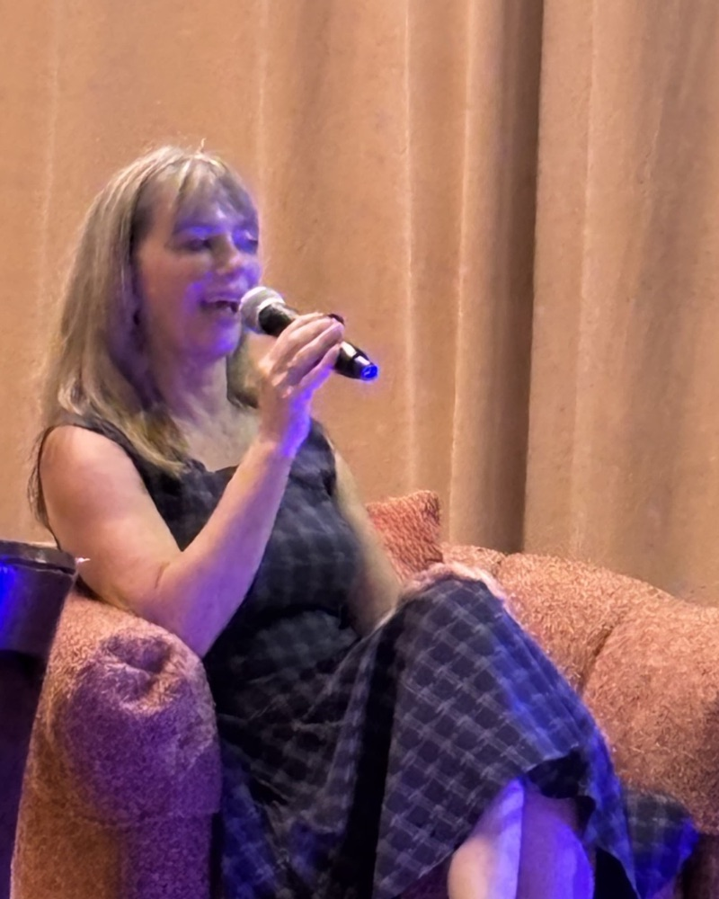
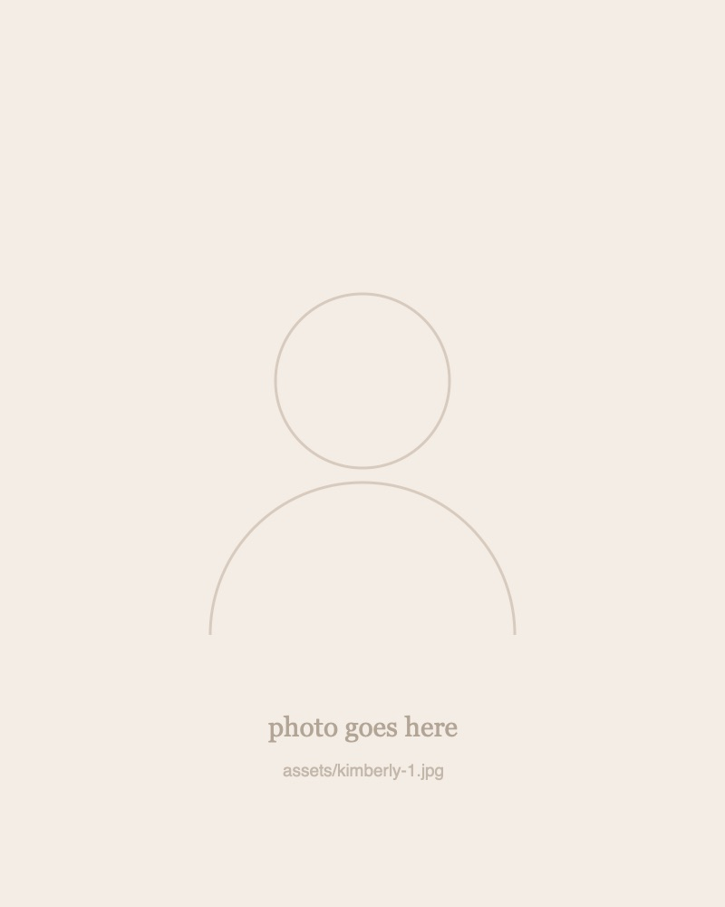

An energy reading is like getting your “vibe” read out loud.
Kimberly Berg — by phone, half an hour or a full hour
Request a bookingWhat’s an energy reading?
I am reading your energy field. It’s the unseen aspect of who you are, as your body and personality are merely the physical expression.
I give voice and explanation to the invisible energy everyone around you picks up on, whether they realize it or not — dictating how people perceive you and influence their opinions of you. It’s why patterns, past-life circumstances and people “find” you.
An energy reading can help you break free from unconscious patterns — patterns we’re often told are buried in childhood, but that are, in fact, more deeply rooted in past-life conditioning.
By learning how and why these past experiences are affecting you, and for what purpose, you may be able to release the aspects of your personality that are no longer serving your personal and spiritual development.
Patterns have purpose. By exploring the context of your relationships, health, career, goals, and dreams, you gain a layered understanding of who you truly are — empowering you to make choices that feel more aligned with your authentic self, and bringing your body, mind, and spirit into greater harmony.

How it works
-
1
You request a booking
Send me a note with a little about what you’re looking for.
-
2
We get in touch
I come back to you, and we settle on a time that suits you both.
-
3
You pay
Once the time is set, I’ll send you a link to pay securely by card.
-
4
We talk by phone
Half an hour or a full hour, just the two of us. Phone only — no video, no script.
One reason people resist change is because they focus on what they have to give up, instead of what they have to gain.
Rick Godwin
Sessions
Half hour
$95
- Thirty minutes, one to one
- By phone
- Paid securely by card
Full hour
$180
- A full hour, one to one
- By phone
- Paid securely by card
Nothing is paid up front. Send me a note, we’ll speak and settle on a time, and I’ll send you a payment link once it’s arranged.
Get in touch
Questions before you book are always welcome.
- Email Kimberlykberg@yahoo.com
- Phone +1 (310) 387-9131
